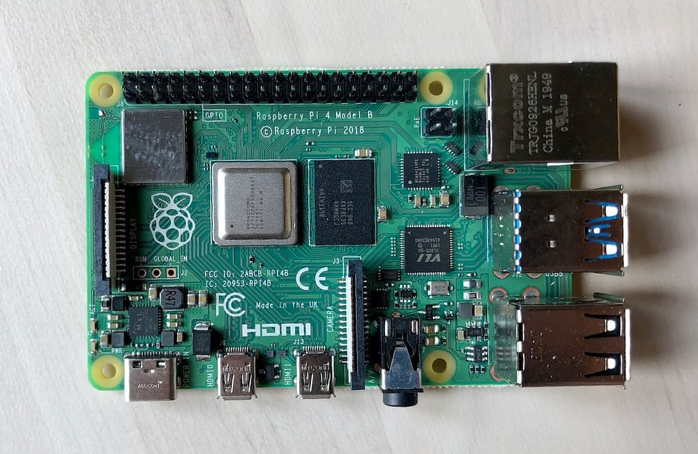

ABOUT ME
MY INTERST
- Embedded systems and microcontroller programming (Arduino, ESP32, Raspberry Pi)
- Robotics and automation (servo-controlled robots, autonomous navigation)
- Internet of Things (IoT) and smart devices
- AI & Machine Learning applications (SVM, Reinforcement Learning, face recognition)
- DIY electronics and hands-on hardware projects
- Safety and security innovations (black box, GPS tracking, FM broadcasting)
- Display UI/UX development (OLED, TFT, ST7789, ESPi UI design)
- Ethical hacking and cybersecurity fundamentals
- Full-stack development (web-based control panels, local hosting)
- Video game emulation and custom game controller development
- Content creation (YouTube Shorts, Instagram reels of tech builds)
MY PROJECTS
-
ESP32 Autonomous Robot – Wall-E Inspired
A fully autonomous robot powered by an ESP32, featuring animated OLED eyes and an ultrasonic sensor mounted on a servo for obstacle detection and personality-driven movements.
-
ESP32 IR Blaster with Joystick UI
A custom remote control using a TFT display and joystick to navigate a brand menu. Sends IR codes stored in JSON format on an SD card to control TVs and ACs.
-
Face Recognition Access System
Implemented using OpenCV and PCA (Eigenfaces) in C to allow facial authentication for secure access control systems.
-
Black Box for Motorbike Riders
Crash detection using an accelerometer and live video feed with ESP32-CAM. Sends GPS coordinates via GSM to emergency contacts in real-time.
-
NES Game Controller with ESP32
Handheld gaming setup that runs NES games from an SD card using joystick controls and a 2.4” TFT display, turning ESP32 into a mini retro game console.
-
Traffic Light Timer Based on Vehicle Density
Uses ultrasonic sensors to detect traffic density and dynamically adjust the green light timer using Arduino Nano, ESP32, and 7-segment display modules.
-
Raspberry Pi Handheld Computer
A DIY Linux-based portable computer using Raspberry Pi 5, touchscreen display, GPIO access, and Python for creating custom tools and scripts.